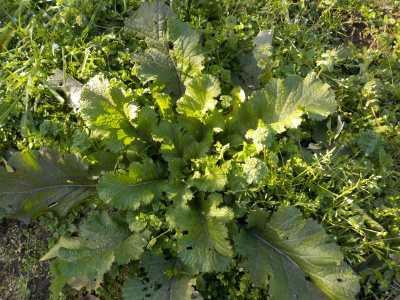
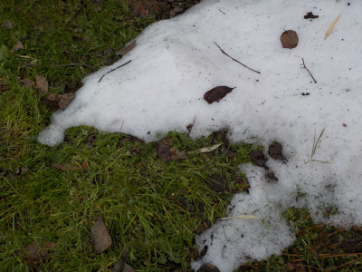

マリーゴールドの種を採りました。
2021/01/31

イチゴの本を読んでいたら、マリーゴールドを植えましょうと書いてあったので種を採りました。
これでマリーゴールドが大量生産できます。
4月になったらポットに蒔いて、育ったらあちこちに植えようと思っています。
2021/01/31
イチゴの本を読んでいたら、マリーゴールドを植えましょうと書いてあったので種を採りました。
これでマリーゴールドが大量生産できます。
4月になったらポットに蒔いて、育ったらあちこちに植えようと思っています。
2021/01/31

まだ冬なので雑草には成長して欲しくないですが、大きく育ってますね。
野菜が育っているんだから雑草も育って当たり前ですね。
草抜きしないと。
2021/01/17

先週の雪はほぼ解けて作業が出来るようになりましたが、やる気が出ません。
慌ててすることもないので、のんびりしようと思います。
過去の日記
畑仕事じゃないよ。